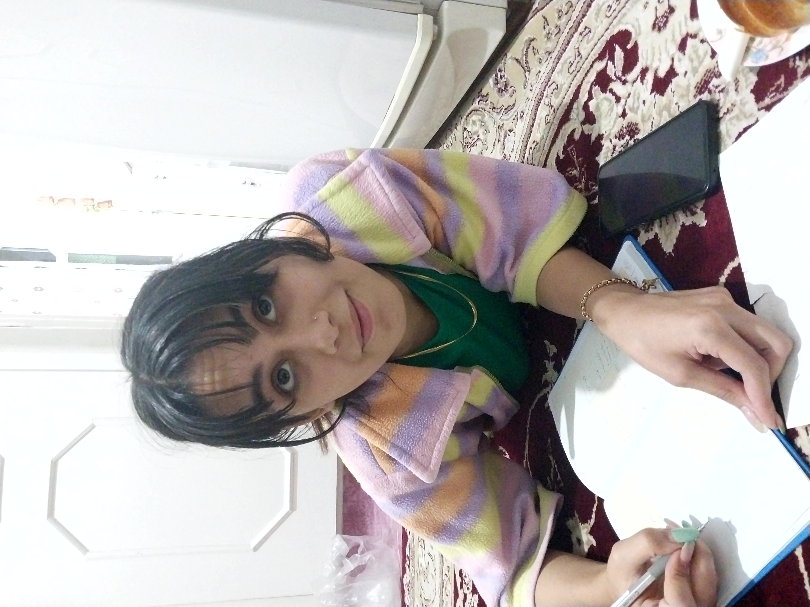
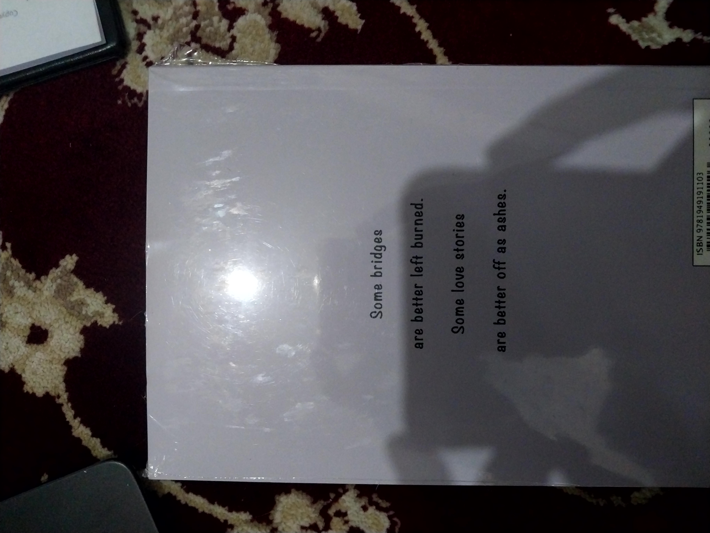
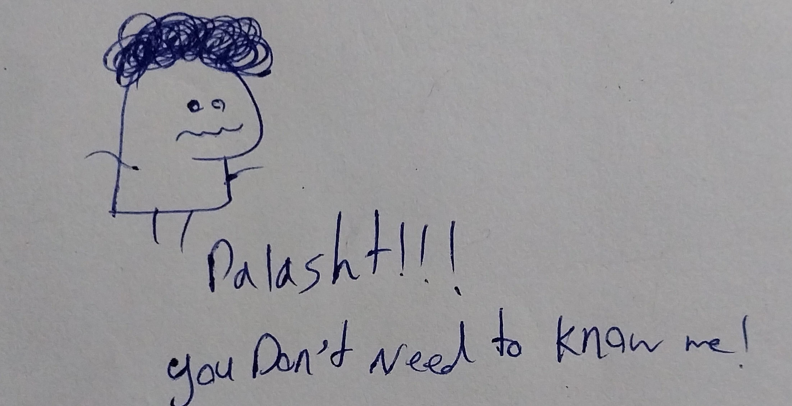
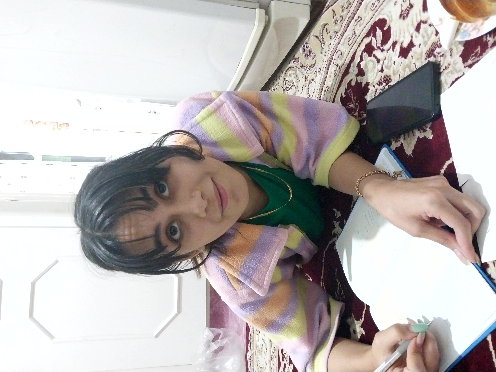
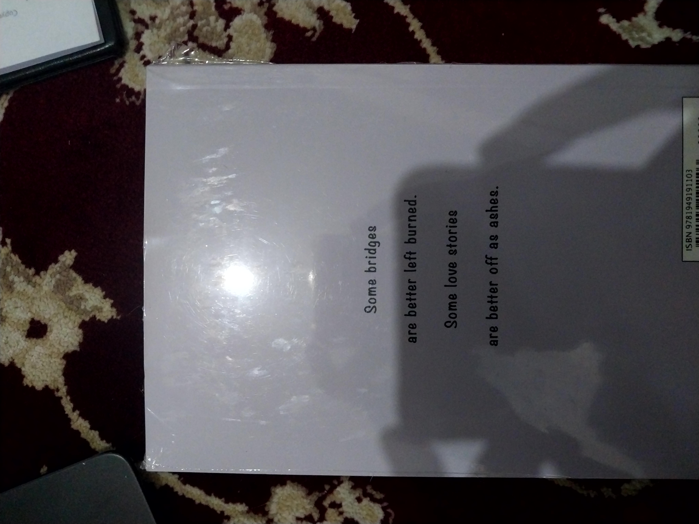
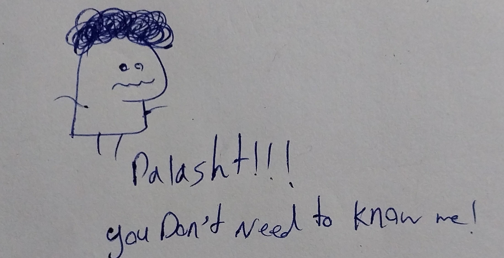

The letter
To : Mohadeseh Ashegh Vatan
From : Me (former watermelon)
With all respect
Hi there,
Once i told you i like writing letters, that's because
i've never been good at talking. And now that the our situations won't let use talk properly I decided on
writing this letter to you.
Isn't it interesting? The first time we met was a Thursday. Also the day we kissed for the first time was a Thursday, either. And then it comes the thursday in which our relationship started scratching untill when at last but not least today on another thursday i'm writing you this letter, not knowing weather you are ever going to read it or not.
I want you to know that the way things happened between us was totally against my favore and i'm sorry if we couldn't act more adultish to at least talk about it and come to a conclusion instead of letting time indicate what happens between the two of us. i really missed talking to you. i missed hugging you, trying to sympathize but won't be able to do so, because of my lack of skill in talking.
I don't know, maybe you were waiting for me to step forward to bring up whatever happened to patch things up but for once I wanted to see weather you do care for me or not. Weather you would text me to see how I am doing or not. Weather you are happy with not having me in your life or not. I believe the answer is quite obvious. But that's not how i can end a relationship. that's why I'm writing this letter to you to speack up my last words. To apologize for anything that bothered you. so, if I were you I would pour myself a glass of coffee because it's gonna be a long letter.
I really wanted to have you beside me even as a friend if not a partner since i really admired your strength. I did love you and when i say that, i mean it because you may consider it "liking" rather "loving" but i just tried to have my feeligns right from my heart, so, if i say i loved you that's not a lie.
I believe i was with you Whenever you needed. I tried to always be there for you and that's why i think i deserved a better ending. If only you could set aside your pride and just think of me as the one who really tried to cheer you up all the time, maybe things would have happened differently.
However, it's in your nature to see the bad side of things rather good things. The poing is that if you are preparing yourself for a war you need your allies beside you to help you out of the trouble and in our case, you did the exact opposite to me. You pushed me away like I was the problem. I'm over it now, but please don't do that to those who love you. Even for your own sake look after those who love you and care for them. Your mother loves you by all her heart. You're her everything and her only object is to see you satisfied and happy and that's the only thing that is keeping her standing. She is the one who'll stand by you for eternity. Don't push those who love you away.
Let's get back to us, if this word has any meanings yet. You did hurt me but you never apologized. Whenever I said that you did something wrong you either gave me excuses or tried to wander the conversation and show as the one who has made a mistake and you tried to show yourself flawless. If only humankind would learn that making mistake is not that much bad as long as you take the accountablity, many things would have happened differently. You read my feeling about "hating you" and your reactions were too harsh and instead of hearing them and trying to see if i'm right, you decided to deny them and shot my feelings down. Don't consider yourself flawless. Everyone makes mistake. As I did and do. As you did and the good news is that if you are making mistakes means you are humankind just like everybody else.
"I love you", "I hate you"
I just told to opposite sentences however, I'm sure it's just "I hate you" which attracts your attention. Because you just hear or read what you want, not
what really is the main point or happening. You have neglected how much i loved you several times and you have stuck to a part which had the least importance
but your way to make a big deal out of nothing makes you overeact. I'm not saying that's intentional but it bothers who are beside you and you should defenetly
have an eye on it.
The memories we had are unforgattable to me. Your laughter is so beautiful that I could stare at them for a long time. It's a pitty that you exhibit them rarely.
The other thing is that I admit I made mistakes as everyone does. but when someone makes a mistake isn't better to focous on him or her realizing the mistake and attempt to fix it? as i tried to not make you sad by your mistakes but you tried to make a big deal out of my mistakes and althought you could see i was dissatisfied with them, you kept giving me a feeling which i feel so bad. You were looking for me begging you by ignoring me. I might be wrong about this last one, but the way you acted I felt this way.
I missed your face, smile and YOU. I wish you would have texeted me. Things could be totally different. However, as you are reading this you might be under lot's of pressure and difficulties ,and you know what? now matter what happen between us, I always wish you well and I wish you get what you deserve one day. I wanted to see you happy one day, and hold your hands that day, It seems that day i won't be next to you but I'm sure that day is sure to come.
I always had this fear that you don't like me since the very first kiss we had, because i had a feeling that I couldn't satisfy you as you imagined and I tried to fix it. I even asked you several times that if you could change something in me what would that be? and if you are happy with me or not.
I loved the time we spent together since your memory would always be with me in my heart but i wish to never see you again
since by writing this letter i have pictured you as someone flawless and if I see you again the picture that I have in my mind of you would be ruined. If I
hadn't told you these things I would have felt really bad since It looks like an unfinished task that must be done, soon or late.
By writing these to you, I don't mean to make you happy or sad but i want to empty my mind of whatever is in my head and give myself a chance to reclaim joy nad comfort
of mind once again. You should do the same thing with Vida. It doesn't matter if it's a happy ending or a sad ending book, you can never close it. Not as long as you haven't
finished it and if you don't close it, it'll hurt you forever. Do it. Even for your own sake. The result might not be ideal, but it would defenetly be real. you
deserve a proper ending(As I did). Talk to her and let this nightmare to come to an end.
Thanks for everything.
Bye for good my feather
 




